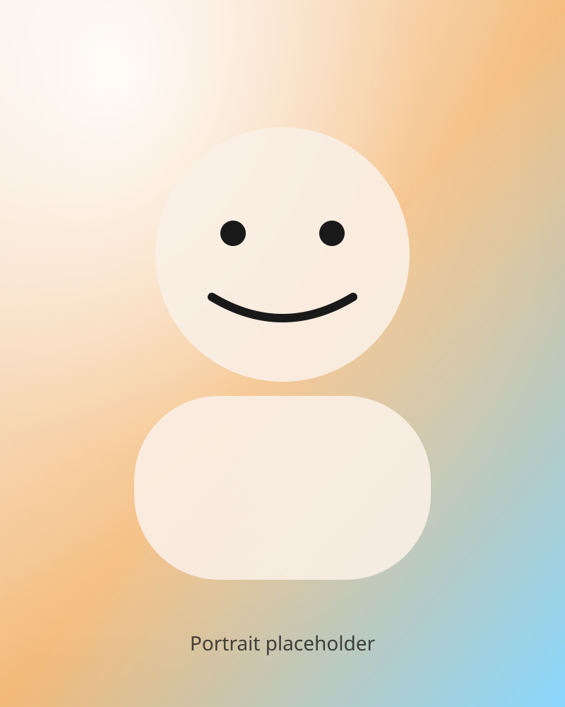

Tech
AI agent development, prompt engineering, data pre-processing, NLP, ML (Scikit-learn, TensorFlow), REST/SOAP APIs, workflow automation, system integration, and data migration.
I work at the intersection of people and platforms - translating messy business needs into clean, scalable systems. I call myself the bridge between coder and client: the person who can map the human story to the tech architecture.

Jack of all trades, pseudo-coder, and client translator. I can't build a $2M codebase alone - but I can make the kind of code that becomes worth $2M.
That means: clear requirements, strong change management, and the right automations in the right places.
Tech + non-tech learnings that shape how I deliver.
AI agent development, prompt engineering, data pre-processing, NLP, ML (Scikit-learn, TensorFlow), REST/SOAP APIs, workflow automation, system integration, and data migration.
Zendesk, ClickUp.ai, Kore.ai, Outreach.ai, HubSpot, Workday, Notion, Make.ai, plus automation across N8N, Zapier, and Power Automate.
Stakeholder management, requirements gathering, process mapping, training development, and the human side of change adoption.
AI agent development, prompt engineering, NLP, ML (Scikit-learn, TensorFlow), data pre-processing.
N8N, Zapier, Power Automate, REST/SOAP APIs, webhooks, workflow automation, data migration.
Python, SQL, JavaScript, HTML/CSS, AWS, OpenCV, Tableau, Figma, Git.
\n AWS Academy Cloud Foundations | AWS Cloud Practitioner | Google Cybersecurity Professional |\n Neural Networks and Deep Learning | Intellectual Property Specialization | Google Project Management.\n
All certifications: Drive folder
B.Tech in Computer Science Engineering
SGPA 9.67
10th | 12th - 81% | 80%